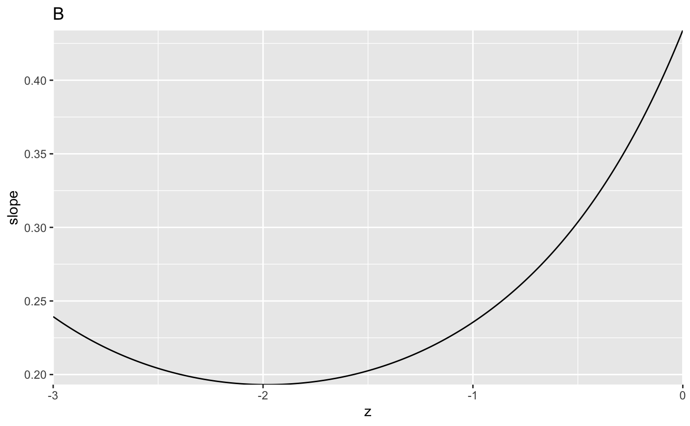
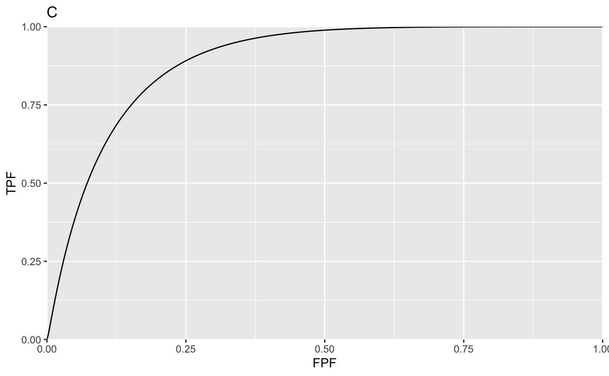
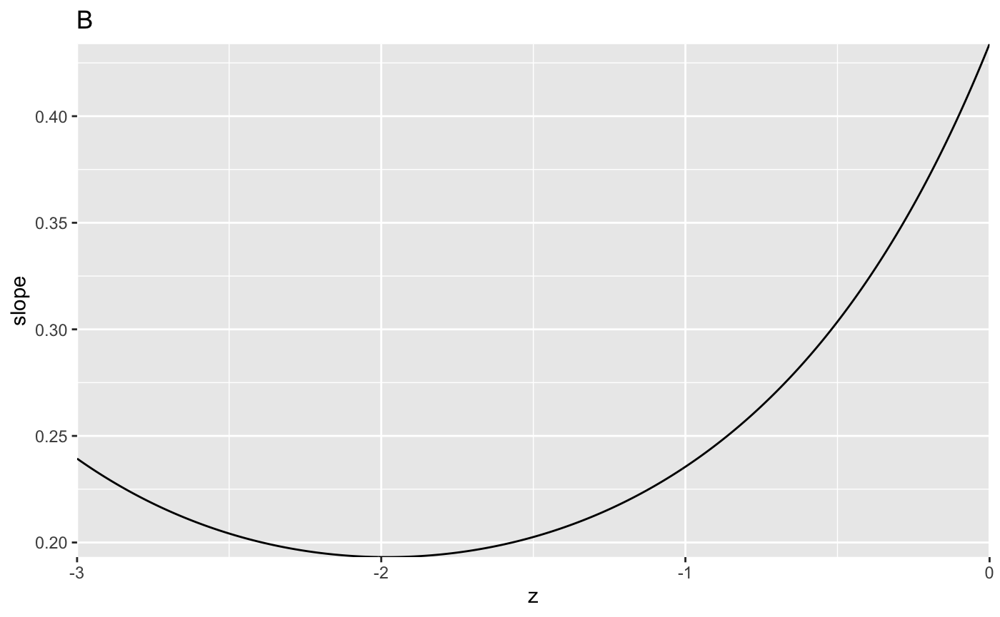
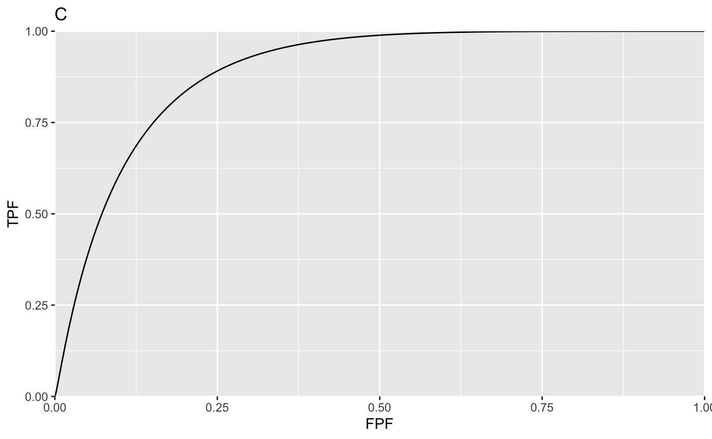

Main code and output
c1Arr <- c(-0.1322804, 0.2225588); daArr <- c(1.197239, 1.740157)
myLabel <- c("A", "B", "C", "D")
myLabelIndx <- 1
for (i in 1:2)
{
c1 <- c1Arr[i]
da <- daArr[i]
ret <- Transform2ab(da, c1)
a <- ret$a;b <- ret$b
if (i == 1) z <- seq(-3, 0, by = 0.01) # may need to adjust limits to view detail of slope plot
if (i == 2) z <- seq(-3, 5, by = 0.01) # may need to adjust limits to view detail of slope plot
FPF <- seq(0.0, 1, 0.001)
TPF <- rocY(FPF, a, b)
rocPlot <- data.frame(FPF = FPF, TPF = TPF)
plotRoc <- ggplot(rocPlot, aes(x = FPF, y = TPF)) +
geom_line() +
scale_x_continuous(expand = c(0, 0)) +
scale_y_continuous(expand = c(0, 0)) +
ggtitle(myLabel[myLabelIndx]);myLabelIndx <- myLabelIndx + 1
slope <-b*dnorm(a-b*z)/dnorm(-z) # same as likelihood ratio
slopePlot <- data.frame(z = z, slope = slope)
p <- ggplot(slopePlot, aes(x = z, y = slope)) +
geom_line() +
scale_x_continuous(expand = c(0, 0)) +
scale_y_continuous(expand = c(0, 0)) +
ggtitle(myLabel[myLabelIndx]);myLabelIndx <- myLabelIndx + 1
print(plotRoc);print(p)
} 
